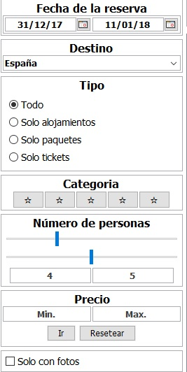
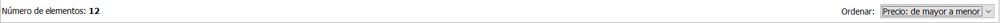

Filtros
Una vez se ha escogido los mínimos filtros para realizar una busqueda, se carga una lista de los productos
que podrían interesarle. A partir de éste momento tiene a su disposición una lista de filtros que le permitirán llegar más
rapido y fácil al producto que está buscando.

El panel de filtros se encuentra a la izquierda de los productos con una lista amplia de diferentes tipos. :
- Panel de lugar: Conjuntos de todos los lugares que se encuentran en la base de datos. Si se introduce un valor que no está se eliminarán todos los elementos de la lista.
- Panel de tipo: Consta de cuatro botones que permiten realizar un filtro según sea de tipo Paquete, Entrada o Alojamiento. Por defecto está una opción que muestra todos los productos.
- Panel de categoria: Consta de cinco botones que determinan las estrellas a filtrar en la lista. Si se encuentra seleccionada alguna, el tipo de productos a filtrar unicamente será de Alojamientos.
- Panel de precio: Consta de dos cuadros de texto que permiten seleccionar el precio mínimo y máximo. Para que éste filtro entre en juego hay que pulsar Ir. Si se pulsa el botón de Resetear, el filtro de precio desaparecerá.
- Panel de número de personas: Consta de dos deslizadores que permiten seleccionar el número de personas, tanto adultos como niños. Para una mejor experiencia se ha añadido dos cuadros de textos que muestran el valor en forma de número.
- Panel solo con fotos: Permite filtrar productos que tienen foto. En caso de que no tengan, se eliminarán de la lista de productos.
En cualquier momento usted podrá retirar este panel de su vista pulsando en Menu-Ver-Panel de filtro.

Además se permite poner un order determinado a la lista que se muestra a través de una lista que se encuentra en la parte superior derecha con tres opciones:
- Relevancia: coloca los objetos en la lista de la forma que recomendamos.
- Precio (de mayor a menor): coloca los objetos en la lista tomando como referencia el precio, en este caso de mayor a menor.
- Precio (de menor a mayor): coloca los objetos en la lista tomando como referencia el precio, en este caso de menor a mayor.